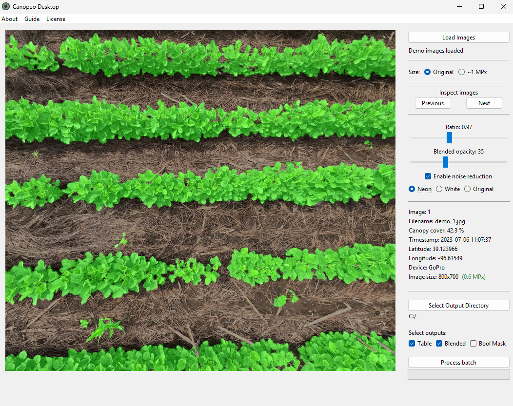

Canopeo Toolkit
Fractional green canopy cover
Measure green canopy cover from field photos.
This toolkit provides lightweight applications for quantifying fractional green canopy cover from downward-facing images — built for researchers, extension agents, and educators who need a reliable, fast, and fully offline tool to analyze hundreds of images in the office or in the field.

Fully offline batch processing
Analyze unlimited images of any size. No account, no cloud — your data stays private
Built-in inspection
Adjustable ratio & opacity, and three mask colors to inspect classification before running a full batch
Multiple outputs
Tabular, binary masks, and blended overlays
Speed toggle
Process at full resolution or ~1 MPx for fast batches
Image metadata
Filename, timestamp, GPS coordinates, and device
Noise filtering
Removes small isolated specks from the classification